一杖万年
从木棍到多功能杖 —— 人类第一件工具的五张面孔（防护 · 探测 · 休息 · 身份 · 助力）
第一章 · 防护：以长度换安全
远古时候，人类曾是食物链中段的猎物。面对狮群虎豹，手边最快的武器就是一根木棍、一支长矛——用长度换安全，是人类最古老的安全杠杆。
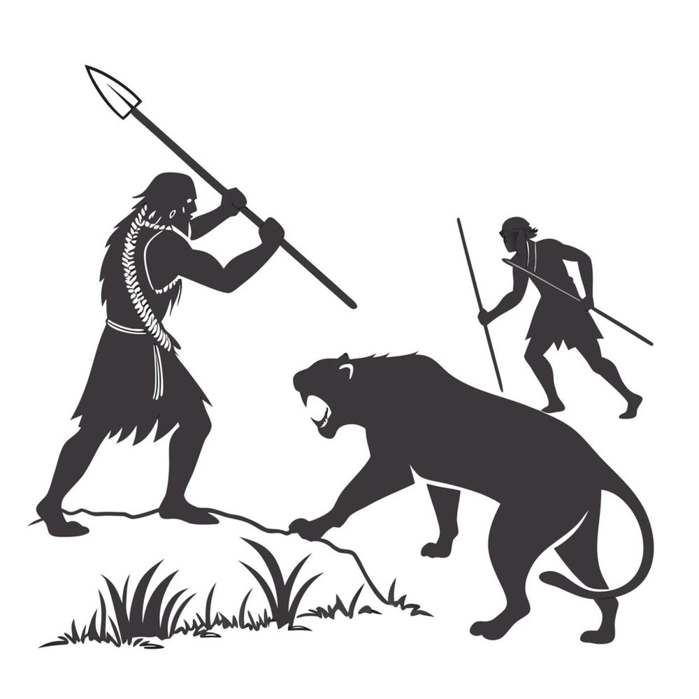
进入农业社会，“持棍防护”被系统化、武术化：棍法成为少林看家的武技之一；《水浒传》里武松打虎，手里那根哨棒，用的就是同一根棍子的逻辑——不刺、不砍，靠长度与力度逼退对手。
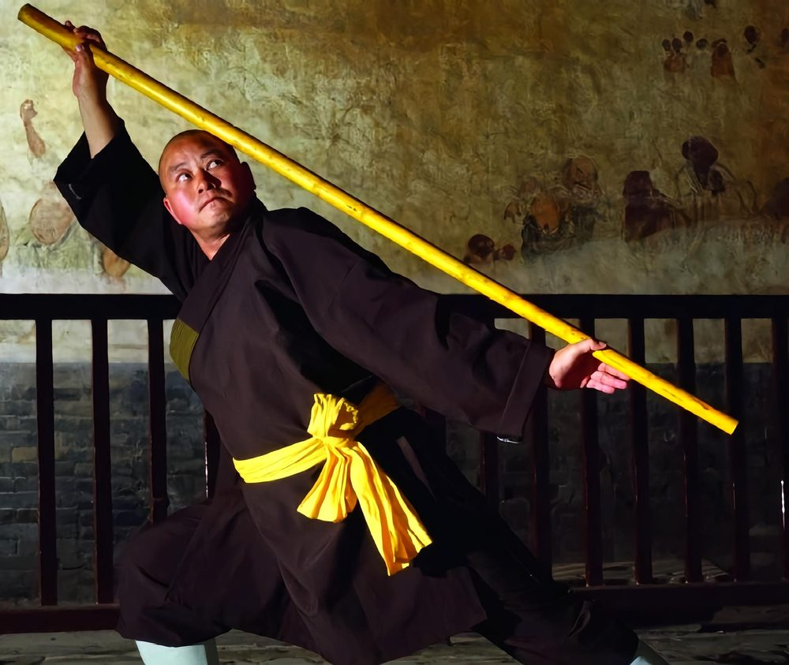
到了工业时代，木棍升级为警棍、伸缩防暴棍；街巷里的普通人，也会备一根棍子防身驱犬。三百年间，材料从硬木变成合金钢，功能内核一个字没变：拉开距离，护住身体。
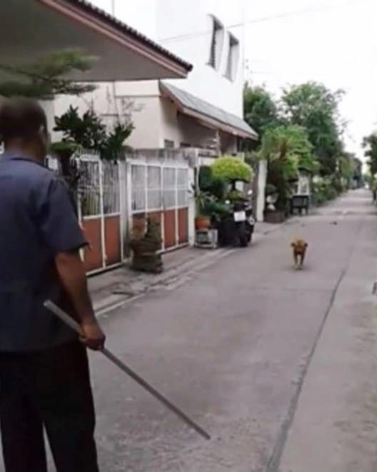
第二章 · 探测：延长触觉半径
人类的手臂有极限，杖没有。热带雨林里，原始人以木杖拨开枝叶、试探地面深浅——杖成了“第二只手”，把触觉往前延伸了一臂。
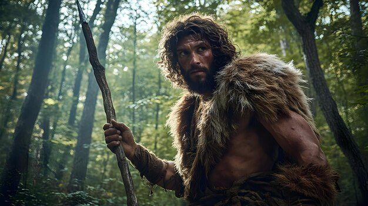
农业社会，船夫的竹篙把这件事做到极致：篙尖触底，一边撑船推进，一边探测水深与河床——篙，就是“可触之眼”。
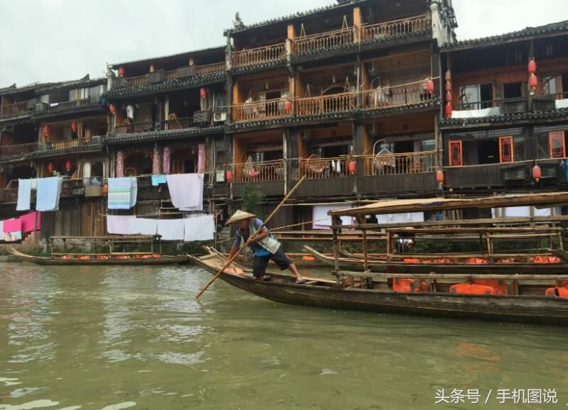
二十世纪，这件探测工具被做成白手杖：1921 年杖身涂白、1931 年法国发起“白杖运动”，它成为视障者独立出行的国际通行符号。从探雨林到探盲道，杖替人“看见”的半径，越来越远。
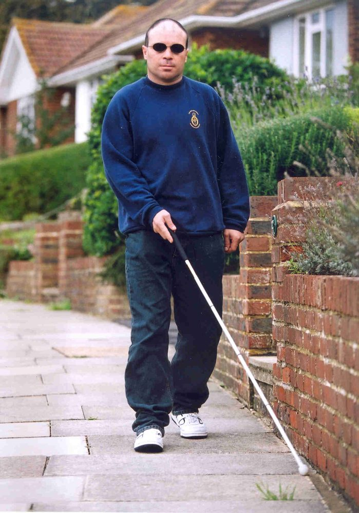
第三章 · 休息：把体重分给地面
迁徙路上，走累了怎么办？拄杖而立——把一部分体重分给木棍，膝盖和腰就有了喘息。
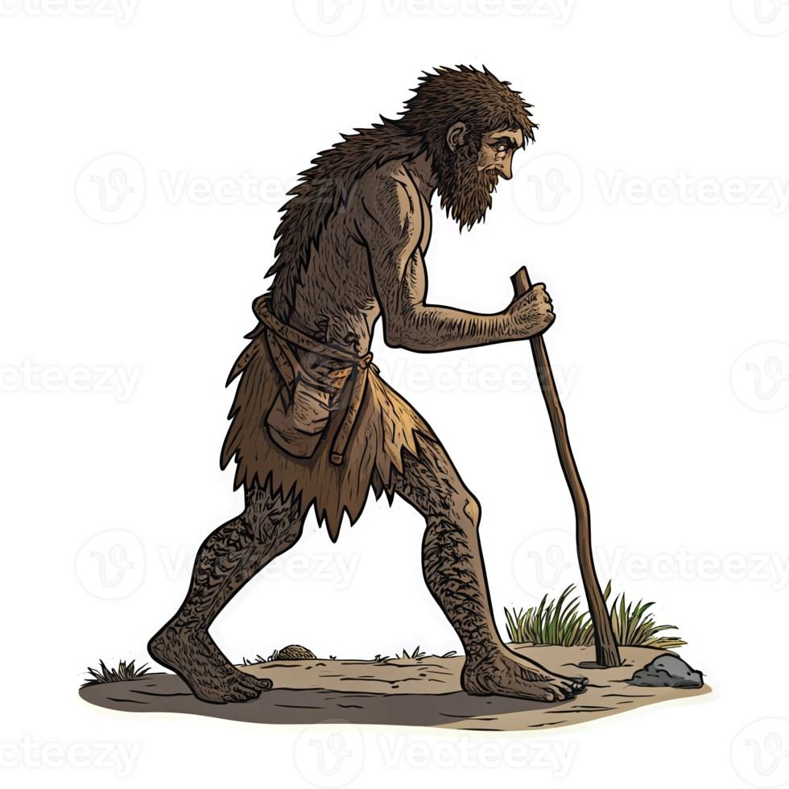
农业社会，这份“支撑”变得精细：樵夫荷柴时，担柴的木棍兼作柱杖，歇脚时以它撑住身体；汉代更把这件事制度化——“年七十授王杖”，杖端饰以鸠鸟，赐给老人，既是支撑，更是养老特权的凭据。
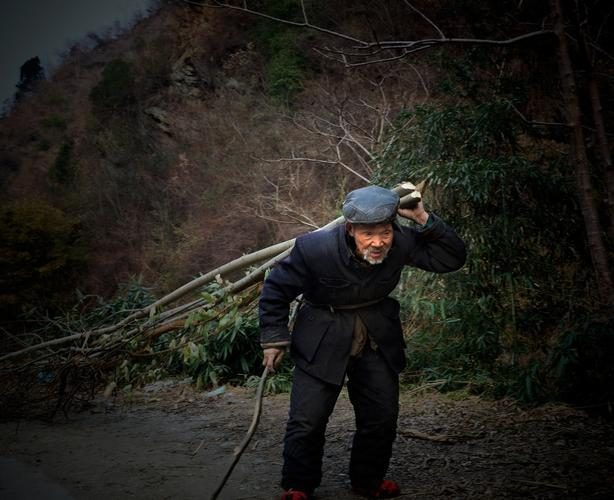
工业时代，“杖”被固定在城市里：地铁车厢的立柱与扶手，其实就是一根焊死在车厢中的杖，通勤者扶着它而立，把体重交给金属杆。
第四章 · 身份：承载权力与品位
棍子一旦被装饰，就不再只是棍子。远古部落里，萨满巫师的杖首饰以鹿角、兽骨与铃铛——它是法器，更是部落神权与身份的双重凭据：持杖者，是能与神说话的人。
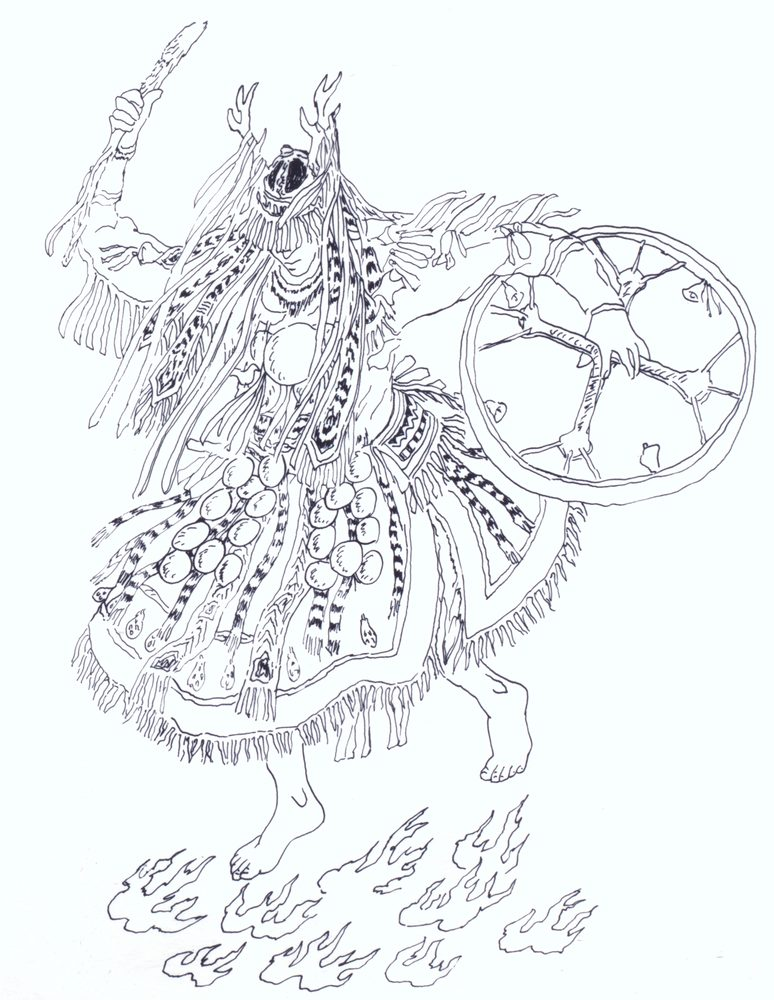
农业社会的僧侣有锡杖：唐僧（玄奘原型）持九环锡杖西行，锡杖是比丘身份与佛法传播的象征；世俗这一端，维多利亚时代的英国绅士，把手杖变成了礼仪与品位的符号——礼帽、手杖、大衣，是那个时代绅士的三件套。
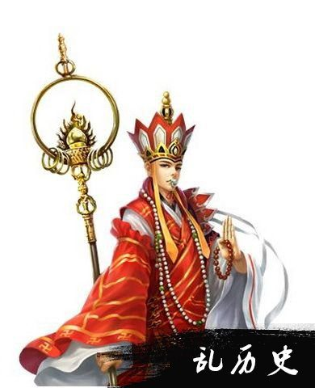
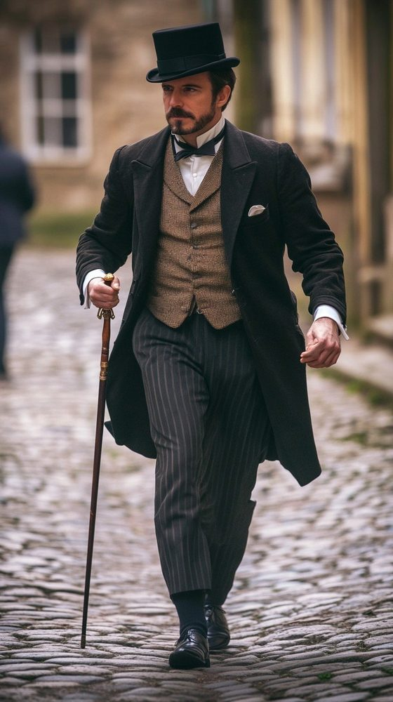
第五章 · 助力：身体的延长与杠杆
最后，杖还能放大我们的力量——这是物理学意义上的第一件“工具”。远古人类把木棍垫在圆石下撬动巨石：用力点、支点、阻力点，杠杆原理就藏在这一根棍里。
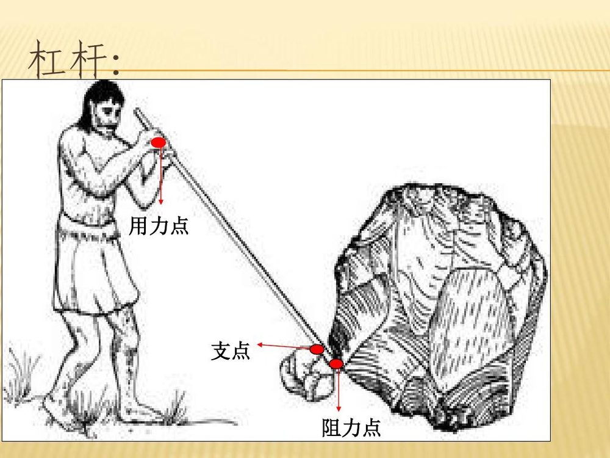
农业社会，扁担把这件事普及到每一天：一根长棍架在肩上，两端各挂一桶水，一人挑起原本两人都搬不动的重量。
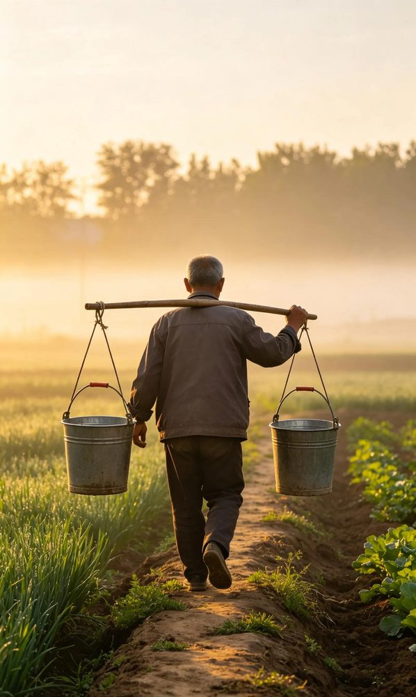
工业时代，木棍撬石升级为钢制撬棍（crowbar）：拆木箱、起道钉、挪铁轨——杠杆依旧。从撬石到撬铁轨，三百万年，变的只是那根棍子的材质。
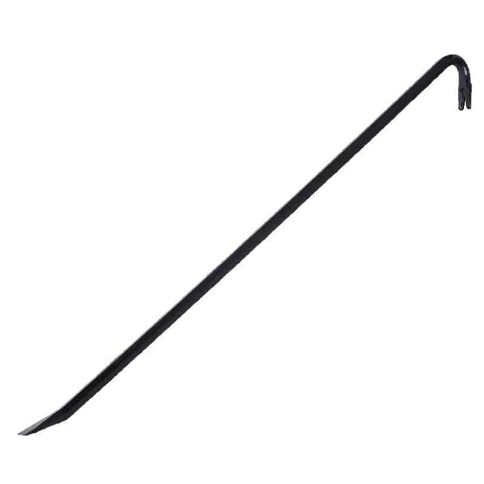
结语 · 一杖万年
回头看，这根棍子走过的路，恰好是人类工具史的缩影：它从防护起步，学会探测，懂得休息，承担身份，最后放大力量——五种功能，一万年未散。
万杖长廊想做的，不是发明什么新东西；恰恰相反，我们是把祖先已经用了三百万年的五种本能，用一张张照片重新接续下去——让每一种杖、每一个与杖同行的瞬间，都被看见、被记住。
材料会从木头变成竹、变成钢、变成碳纤维；但只要人还要走路、还要探路、还要站稳、还要被认出、还要省力——这根杖，就还会再走一万年。